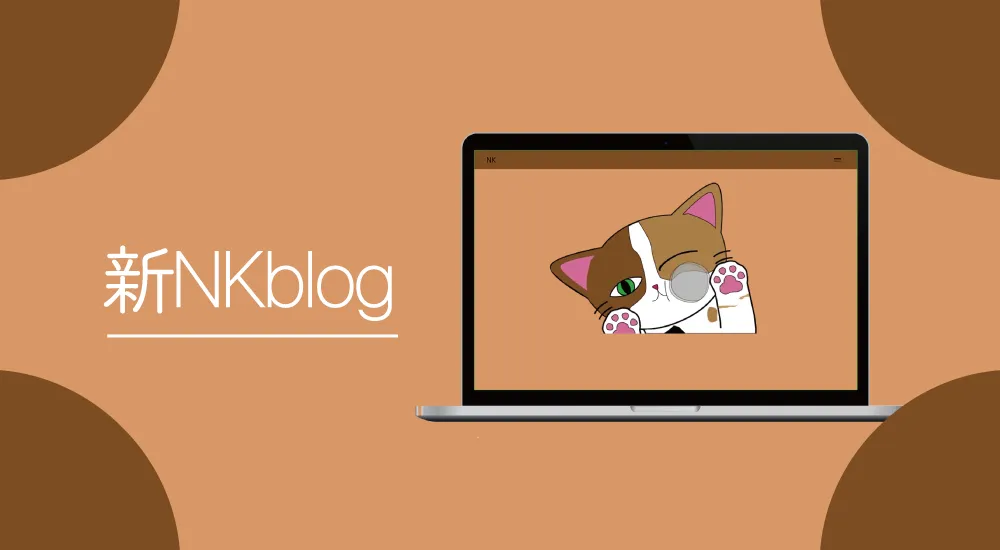

| 作品名 | NKblog |
| ジャンル | Webサイト制作 |
| 制作期間 | 約1週間 2024年7月〜 |
| 制作人数 | 1人 |
| 使用技術、ツール | HTML / CSS / JavaScript Sass / BEM / WordPress Illustrator / Photoshop / VisualStudioCode |
| URL | https://koki.main.jp/blog-2/ |
概要
1年生後期集中授業で自分のブログを制作しましたが、特に個別ページなどがとても見づらかったので新しくブログを作りました。
Point1 デザイン
デザインの配色のモチーフは一年前のblogと同じく「三毛猫」です。 三毛猫を2匹家で飼っているのでその子達をイメージして作りました。
Point2 トップ画像
ブログのトップページにある画像は自分で書きましたが、この画像。 実は天気によって画像が変わるようになっています。 授業で一度使ったことのある天気APIをつかい、天気によって画像を切り替える処理を書きました。
作品制作を通して
このブログは１周間ほどで作ったのでまだまだ改善できるところがたくさんあります。 ですが一回WordPressを使った経験があった事と、php,javascriptの理解が進んでいた事がありとてもスムーズに制作ができた。 「自分の持っている技術を用いて作る」ブログにするつもりなのでこれからも使ったことのない技術を勉強し、取り入れていきたいと思います。